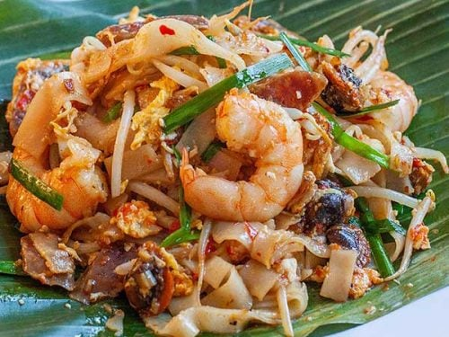
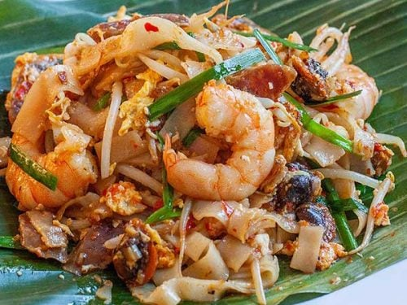

Street Food Recipes

Homemade Nasi Lemak
⏱ Total Time: 45 mins
🽠Servings: 2 people
🌶 Spice Level: Mild

🧂 Ingredients (2 servings)
- 1 cup fragrant rice
- 1 cup coconut milk
- 1 cup water
- 2 pandan leaves (knotted)
- 1 slice ginger
- 1/2 tsp salt
- Sides:
- 50g fried peanuts
- 50g fried anchovies
- 1 cucumber (sliced)
- 2 boiled eggs
- 4 tbsp sambal
👨‍🍳 Instructions
- Rinse the rice and drain well.
- Add rice, coconut milk, water, pandan leaves, ginger, and salt to rice cooker. Mix well.
- Cook as usual.
- Let sit for 10 minutes, then remove pandan and ginger.
- Fry peanuts and anchovies until golden and crispy.
- Slice cucumber and boil eggs, cut in half.
- Plate the rice and arrange sides around it.
- Serve with sambal.
💡 Pro Tip: If you don't have pandan leaves, use a drop of pandan essence. Sambal can be store-bought or homemade.
🌟 Did you know? Nasi Lemak was originally a farmer's breakfast to provide energy for long working days!
💬 What Others Say
"Dang Dang Dang! Best Nasi Lemak recipe ever!"
Ikan Badar Bakar
⏱ Total Time: 35 mins
🽠Servings: 3 people
🌶 Spice Level: Medium
🧂 Ingredients
- 1 whole badar fish (cleaned)
- 3 tbsp tamarind paste
- 2 tbsp palm sugar
- 6 red chilies
- 4 shallots
- 3 garlic cloves
- 1 inch galangal
- 2 lemongrass stalks
- Salt to taste
- Banana leaves for wrapping
👨‍🍳 Instructions
- Blend chilies, shallots, garlic, and galangal into paste.
- Mix paste with tamarind, palm sugar, and salt.
- Marinate fish with the paste for 15 minutes.
- Wrap fish in banana leaves.
- Grill over charcoal for 12-15 minutes, turning once.
- Serve hot with rice and vegetables.
💡 Pro Tip: Use charcoal for authentic smoky flavor. If banana leaves are unavailable, use aluminum foil.
💬 What Others Say
"The smoky flavor is incredible! Reminds me of my grandmother's cooking."
Mee Udang Muar
⏱ Total Time: 55 mins
🽠Servings: 4 people
🌶 Spice Level: Medium
🧂 Ingredients
- 400g yellow noodles
- 300g prawns (peeled, reserve shells)
- 200g bean sprouts
- 3 eggs
- 4 shallots (sliced)
- 3 garlic cloves
- 2 tbsp chili paste
- 2 tbsp dark soy sauce
- 1 tbsp light soy sauce
- Salt and pepper to taste
- Spring onions for garnish
👨‍🍳 Instructions
- Fry prawn shells until fragrant, add water to make stock.
- Strain stock and set aside.
- Heat oil, fry shallots and garlic until fragrant.
- Add chili paste, stir for 1 minute.
- Add prawns, cook until pink.
- Add noodles, bean sprouts, and stock.
- Season with soy sauces, salt, and pepper.
- Crack eggs into pan, stir gently.
- Garnish with spring onions and serve hot.
💡 Pro Tip: Don't throw away prawn shells - they make the most flavorful stock!
💬 What Others Say
"Tastes exactly like the famous Muar version! The prawn stock makes all the difference."
Char Kuey Teow
⏱ Total Time: 25 mins
🽠Servings: 2 people
🌶 Spice Level: Medium

 

🧂 Ingredients
- 400g fresh flat rice noodles
- 200g prawns
- 100g cockles (optional)
- 2 Chinese sausages (sliced)
- 200g bean sprouts
- 2 eggs
- 3 garlic cloves (minced)
- 2 tbsp dark soy sauce
- 1 tbsp light soy sauce
- 1 tbsp chili paste
- Chives for garnish
👨‍🍳 Instructions
- Heat wok over high heat with oil.
- Fry garlic until fragrant.
- Add sausages, cook until slightly crispy.
- Add prawns and cockles, stir-fry briefly.
- Push ingredients to one side, scramble eggs.
- Add noodles, both soy sauces, and chili paste.
- Toss everything together over high heat.
- Add bean sprouts, stir-fry for 1 minute.
- Garnish with chives and serve immediately.
💡 Pro Tip: High heat is crucial for wok hei (breath of the wok). Work fast and don't overcook!
💬 What Others Say
"Perfect wok hei! Just like the street stalls in Penang."
Nasi Kerabu
⏱ Total Time: 55 mins
🽠Servings: 4 people
🌶 Spice Level: Medium
🧂 Ingredients
- 2 cups jasmine rice
- 10 butterfly pea flowers (dried)
- 1 cup grated coconut
- 100g long beans (chopped)
- 100g bean sprouts
- 2 cucumber (julienned)
- Fish crackers
- Salted egg
- Fried chicken or fish
- Sambal:
- 10 dried chilies
- 3 shallots
- Belacan (shrimp paste)
- Tamarind juice
👨‍🍳 Instructions
- Soak butterfly pea flowers, strain blue water.
- Cook rice with blue water until blue colored.
- Steam grated coconut with salt.
- Blanch long beans and bean sprouts.
- For sambal: blend chilies, shallots, belacan.
- Cook sambal with tamarind juice.
- Arrange blue rice on plate.
- Top with steamed coconut, vegetables.
- Serve with sambal, crackers, and proteins.
💡 Pro Tip: The blue color comes from butterfly pea flowers - completely natural! Adjust the amount for desired color intensity.
💬 What Others Say
"Beautiful blue rice! My kids love the colors and fresh flavors."
Satar Terengganu
⏱ Total Time: 55 mins
🽠Servings: 6 people
🌶 Spice Level: Medium
🧂 Ingredients
- 500g mackerel fish (deboned)
- 100ml thick coconut milk
- 1 egg
- 2 tbsp tapioca starch
- 8 dried chilies (soaked)
- 4 shallots
- 3 garlic cloves
- 1 inch galangal
- 2 lemongrass stalks
- 1 tbsp palm sugar
- Salt to taste
- Coconut leaves for wrapping
👨‍🍳 Instructions
- Blend fish meat until smooth paste.
- Blend chilies, shallots, garlic, galangal, lemongrass.
- Mix fish paste with spice paste.
- Add coconut milk, egg, starch, sugar, salt.
- Mix until well combined and sticky.
- Wrap mixture in coconut leaves.
- Secure with toothpicks.
- Grill over medium heat for 12-15 minutes.
- Turn occasionally until cooked through.
💡 Pro Tip: Use banana leaves if coconut leaves unavailable. The fish paste should be smooth and sticky for best texture.
💬 What Others Say
"Authentic Terengganu taste! The coconut milk makes it so creamy."

Gulai Tempoyak Ikan Patin
⏱ Total Time: 45 mins
🽠Servings: 4 people
🌶 Spice Level: Hot
🧂 Ingredients
- 1 whole patin fish (cut into steaks)
- 4 tbsp tempoyak (fermented durian)
- 400ml coconut milk
- 2 lemongrass stalks
- 4 kaffir lime leaves
- 2 turmeric leaves (optional)
- Spice Paste:
- 8 dried chilies
- 6 shallots
- 4 garlic cloves
- 1 inch galangal
- 1 inch ginger
- 1 inch turmeric
👨‍🍳 Instructions
- Blend all spice paste ingredients.
- Heat oil, fry spice paste until fragrant.
- Add lemongrass and lime leaves.
- Add tempoyak, cook for 2 minutes.
- Pour coconut milk, bring to boil.
- Add fish steaks gently.
- Simmer for 15 minutes until fish is cooked.
- Add turmeric leaves if using.
- Season with salt and serve hot with rice.
💡 Pro Tip: Tempoyak is fermented durian paste - the key ingredient that gives this dish its unique flavor!
💬 What Others Say
"An acquired taste but absolutely delicious! The tempoyak adds incredible depth."
Wat Tan Hor Fun
⏱ Total Time: 27 mins
🽠Servings: 2 people
🌶 Spice Level: Mild
🧂 Ingredients
- 400g fresh hor fun noodles
- 200g chicken (sliced)
- 100g prawns
- 100g fish cake (sliced)
- 200g choy sum
- 2 eggs (beaten)
- 3 garlic cloves (minced)
- 2 tbsp dark soy sauce
- 1 tbsp light soy sauce
- 1 tbsp oyster sauce
- 1 cup chicken stock
- 1 tbsp cornstarch mixed with water
👨‍🍳 Instructions
- Heat wok over high heat with oil.
- Stir-fry noodles with soy sauces until coated.
- Remove noodles and set aside.
- Fry garlic until fragrant.
- Add chicken and prawns, cook until done.
- Add fish cake and vegetables.
- Pour chicken stock, bring to boil.
- Add cornstarch mixture to thicken.
- Slowly drizzle beaten eggs while stirring.
- Pour gravy over noodles and serve hot.
💡 Pro Tip: The key is the silky egg gravy - drizzle eggs slowly while stirring continuously for smooth texture.
💬 What Others Say
"Perfect comfort food! The egg gravy is silky smooth just like the restaurant."

Satay Ayam
⏱ Total Time: 60 mins
🽠Servings: 4 people
🌶 Spice Level: Medium
🧂 Ingredients
- 1kg chicken thigh (cubed)
- 2 tbsp turmeric powder
- 2 tbsp coriander powder
- 1 tbsp cumin powder
- 4 shallots (blended)
- 3 garlic cloves (blended)
- 2 tbsp palm sugar
- Salt to taste
- Wooden skewers (soaked)
- Peanut Sauce:
- 200g roasted peanuts
- 4 dried chilies
- 2 shallots
- Tamarind juice
- Palm sugar
👨‍🍳 Instructions
- Mix all marinade ingredients.
- Marinate chicken for at least 30 minutes.
- Thread chicken onto skewers.
- For sauce: blend peanuts, chilies, shallots.
- Cook sauce with tamarind and sugar until thick.
- Grill satay over charcoal, turning frequently.
- Baste with leftover marinade while grilling.
- Cook for 12-15 minutes until golden.
- Serve hot with peanut sauce, cucumber, and rice cubes.
💡 Pro Tip: Use charcoal for authentic smoky flavor. Fan the charcoal to get that perfect char!
💬 What Others Say
"Brings back childhood memories! The peanut sauce is absolutely perfect."
Siew Pao (Char Siu Bao)
⏱ Total Time: 80 mins
🽠Servings: 8 buns
🌶 Spice Level: Mild
🧂 Ingredients
- Dough:
- 300g plain flour
- 1 tsp instant yeast
- 1 tbsp sugar
- 1 tsp baking powder
- 150ml warm water
- 2 tbsp oil
- Filling:
- 300g char siu (diced)
- 2 tbsp oyster sauce
- 1 tbsp dark soy sauce
- 1 tbsp cornstarch
- 1 tsp sesame oil
👨‍🍳 Instructions
- Mix flour, yeast, sugar, baking powder.
- Add water and oil, knead into smooth dough.
- Rest dough for 30 minutes until doubled.
- Mix all filling ingredients.
- Divide dough into 8 portions.
- Roll each into circle, add filling.
- Seal buns tightly, place on parchment.
- Rest for 15 minutes.
- Steam for 15-20 minutes over high heat.
- Let rest 5 minutes before opening steamer.
💡 Pro Tip: Don't open the steamer immediately after cooking - let it rest to prevent the buns from collapsing!
💬 What Others Say
"Fluffy and delicious! Just like from the dim sum restaurant."
Malacca Chicken Rice Ball
⏱ Total Time: 75 mins
🽠Servings: 4 people
🌶 Spice Level: Mild
🧂 Ingredients
- 1 whole chicken
- 2 cups jasmine rice
- 3 tbsp chicken fat/oil
- 4 shallots (minced)
- 3 garlic cloves (minced)
- 1 inch ginger
- Salt to taste
- Ginger Sauce:
- 3 inch young ginger
- 2 tbsp light soy sauce
- 1 tbsp sesame oil
- 1 tsp sugar
- Pinch of salt
👨‍🍳 Instructions
- Poach chicken in salted water with ginger.
- Reserve chicken stock, set chicken aside.
- Fry shallots and garlic in chicken fat.
- Add rice, stir-fry until coated.
- Add chicken stock, cook rice until done.
- Let rice cool, then shape into balls.
- Steam rice balls for 10 minutes.
- For sauce: blend ginger with other ingredients.
- Slice chicken and serve with rice balls.
- Serve with ginger sauce and cucumber.
💡 Pro Tip: Wet your hands when shaping rice balls to prevent sticking. The rice should be slightly sticky but not mushy.
💬 What Others Say
"Such a unique way to serve chicken rice! The balls are perfectly seasoned."
Otak-Otak
⏱ Total Time: 50 mins
🽠Servings: 6 people
🌶 Spice Level: Medium
🧂 Ingredients
- 500g white fish fillet
- 200ml coconut cream
- 2 eggs
- 2 tbsp tapioca starch
- 6 dried chilies (soaked)
- 4 shallots
- 3 garlic cloves
- 1 inch galangal
- 2 lemongrass stalks
- 1 tbsp belacan
- 2 tbsp palm sugar
- Salt to taste
- Banana leaves for wrapping
👨‍🍳 Instructions
- Blend fish until smooth paste.
- Blend chilies, shallots, garlic, galangal, lemongrass, belacan.
- Mix fish paste with spice paste.
- Add coconut cream, eggs, starch, sugar, salt.
- Mix until smooth and well combined.
- Clean banana leaves, cut into rectangles.
- Spoon mixture onto leaves, wrap securely.
- Grill over medium heat for 12-15 minutes.
- Turn occasionally until cooked through.
- Serve hot from the leaf.
💡 Pro Tip: Blanch banana leaves in hot water to make them more pliable for wrapping. The mixture should be thick but spreadable.
💬 What Others Say
"Perfectly spiced and so fragrant! The banana leaf adds amazing aroma."